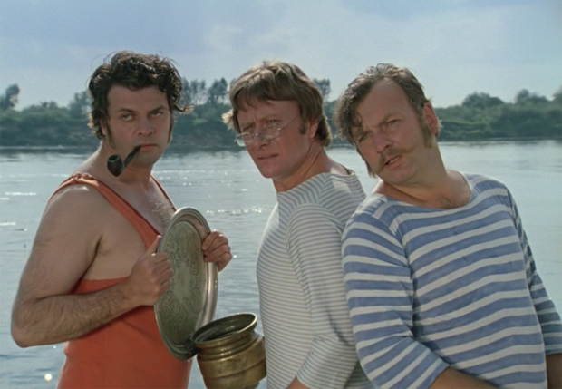
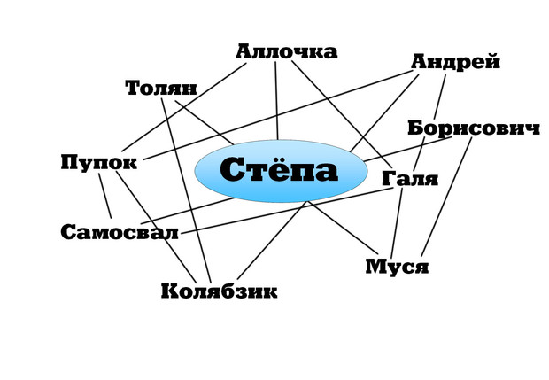
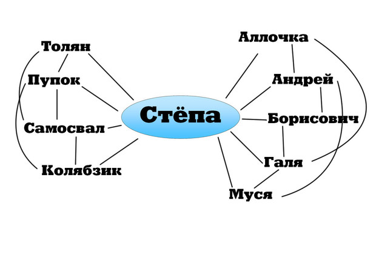
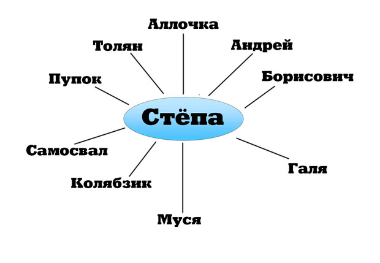

МУЖСКИЕ ПРАВИЛА
Согласно науке, друзья бывают трех видов
Ученые выяснили, что дружба делится на три категории. Узнай, какая у вас с Толяном.
Вот и подоспело очередное исследование упорядочит твою жизнь и разложит ее по логическим полочкам. На этот раз ученые покусились на священное понятие «дружба».
Ты когда-нибудь задумывался о том по какому принципу выбираешь друзей?, Если нет, можешь и дальше не задумываться: за тебя это уже сделала профессор Дженис Маккейб из Университета Среднего Запада.
Проанализировав анкетные данные 67 студентов Дженис пришла к выводу,, что дружеские отношения индивидуума бывают трехтипов.
Сейчас мы расскажем тебе про каждый. Индивидуума мы решили назвать Стёпой во всех трех разновидностях дружбы — для простоты понимания. (Если твое имя Стёпа, тебе будет совсем просто.)
1-й тип. Созависимый
Именно такого типа дружбу мы на протяжении десяти сезонов наблюдали в сериале «Друзья». Дружба по созависимому типу подразумевает одну компанию, в которой все так или иначе связаны друг с другом. Кто-то в большей, кто-то в меньшей степени, но связаны.
С одной стороны, как считает профессор Маккейб, это хорошо: у индивидуума Стёпы при стрессовых обстоятельствах есть много плеч, на которые можно опереться. С другой — такие закрытые сообщества не любят принимать в свое лоно новых участников. Если Стёпа проникнется теплыми чувствами к девушке из внешнего мира, а участникам группы она не понравится, у отношений вряд ли есть будущее.
2-й тип. Разделяющий
У Стёпы есть несколько групп друзей, причем эти группы никак не пересекаются. Это удобно: Это удобно: Стёпа может заявляться в каждую группу в разных образах.
Например, с товарищами по консерватории Стёпа — виолончелист, а с ребятами из двора он простой парень из 5-й квартиры, который все время ходит с большим загадочным футляром. Минус: если Стёпе взбредет в голову познакомить эти разобщенные группы, участники одной могут представить его перед участниками другой в невыгодном свете (особенно если и там и там есть по женщине-другу, которые к нему неравнодушны).
3-й тип. Индивидуальный
Большие группы друзей и шумные посиделки в баре привлекают Стёпу куда меньше, чем глубокомысленное общение с глазу на глаз. В итоге у Стёпы есть несколько друзей из разных областей жизни, с каждым он видится по отдельности, и они могут не знать друг друга.
По мнению профессораМаккейб, такой подход к дружбе выдает в Стёпе независимого человека, способного принимать решения, что хорошо. А вот плохо то, что в неприятной ситуации (например, если хулиганы отнимут у Стёпы виолончель) у него не будет большой группы друзей, которая готова сплотиться и постоять за него.
10 правил мужской дружбы
Новый выпуск собрания мужских правил посвящен лучшим друзьям.
1. | Ты — надежный тыл своего друга
Пока твоего товарища нет, ты чутко реагируешь на опасность, угрожающую ему или его чести. Его ищет начальник, жена, налоговая инспекция — сочиняй любые истории и доставай из кармана невероятные алиби. И пресекай на корню проявления экстремизма, когда про друга говорят недоброе коллеги, подруги и его попугай.
2. | Друг не знает слова «нет»
Ты всегда готов выполнить просьбу друга. Но ты знаешь, что друг не пристанет с невыполнимой просьбой. Если друг пришел с нереальной просьбой, то это не друг, а родственник какой-то.
3. | Девушка друга — не девушка
Ты можешь сжечь дом товарища, увести его машину и даже надеть его голубые замшевые туфли. Но ты не можешь покушаться на его девушку никогда и никак! Хотя если вы последние три человека на Земле и вам надо зачать новую цивилизацию… Да, это неоднозначный случай, мы в аналогичной ситуации действовали по обстоятельствам.
4. | Дело — бремя
Не заводи с другом серьезный совместный бизнес. Это явно не та вещь, ради которой стоит рисковать товарищем. Зачастую либо деньги оказываются сильнее дружбы, либо дружба сильнее денег. В общем, или рассоритесь, или разоритесь. Бывают исключения, конечно: один рисует картины, другой — продает. Идиллия! Потом продавец учит художника как рисовать то, что лучше продается, художник сопротивляется, психует, приходит творческий кризис и начинаются скандалы… М-да, неудачный пример.
5. | В дружбе все настоящее
Друзьям не дарят поддельные швейцарские часы и кроссовки Ponosonic. Никакой фальши! Если не знаешь, что подарить, — не дари ничего. «Ничего» очень трудно подделать, «ничего» всегда настоящее. А главное, «ничего» не захламляет квартиру. Хороший друг точно не обидится.
6. | Ты — служба спасения
Если твой друг посреди ночи поднимает тебя звонком: «Друг, я в полиции! Сделай что-нибудь!» — это высшая степень доверия. Он верит: ты его вызволишь оттуда во что бы то ни стало в любое время суток. Даже если полиция вдруг была права. Хотя если друг — сам полицейский, то ему просто нечем занять себя в ночное дежурство. Поиграй с ним в шахматы через мессенджер.
7. | Женатый друг — не клоун
Это же так весело выглядит в американских комедиях, когда друзья задорно высмеивают женатого товарища! Но учти, комедии, как правило, заканчиваются тем, что женятся в результате все поголовно. Так что тысячу раз подумай, прежде чем глумиться над женатостью друга, а в итоге пошути над размером его джипа.
8. | Друг — не семейный психолог
Когда жена друга бьет об его голову тарелки, а он еще не решил, выгнать ее из дома или купить новые тарелки, — мудро молчи. Для советов существуют дипломированные психологи и бесполезные родственники. А друг существует для более важных вещей, чем улаживание семейных конфликтов.
8. | Друг — не семейный психолог
Когда жена друга бьет об его голову тарелки, а он еще не решил, выгнать ее из дома или купить новые тарелки, — мудро молчи. Для советов существуют дипломированные психологи и бесполезные родственники. А друг существует для более важных вещей, чем улаживание семейных конфликтов.
9. | Бери последнее
На скромном дружеском столе к утру остался последний сэндвич, а в пачке последняя сигарета? Можешь взять или то, или другое, но никогда — и то и другое сразу. Если на тонущем судне осталось последнее место в шлюпке, поступайте аналогично: один занимает это место, а другому достаются последние сигареты. Все довольны.
10. | Не учи друга жить
Принимай своего друга таким, какой он есть. Не вздумай его изменить или испытать на нем свои сомнительные педагогические навыки. Даже если он все это стерпит и станет лучше (что маловероятно), ему может понадобиться новый друг, получше тебя.